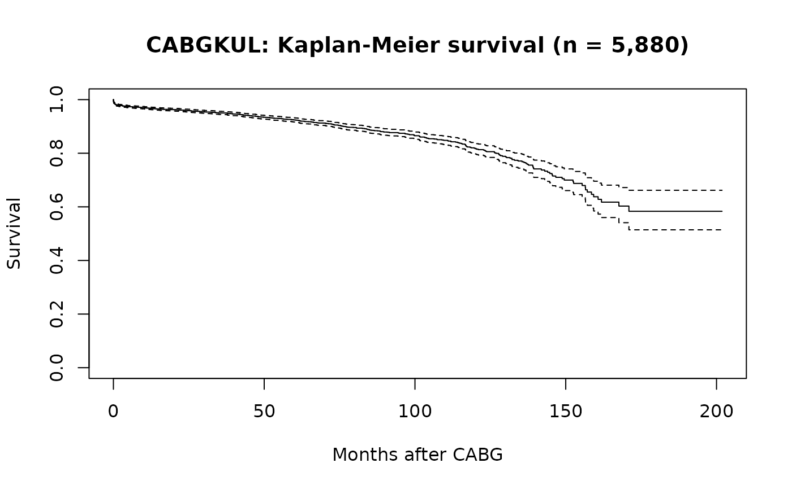
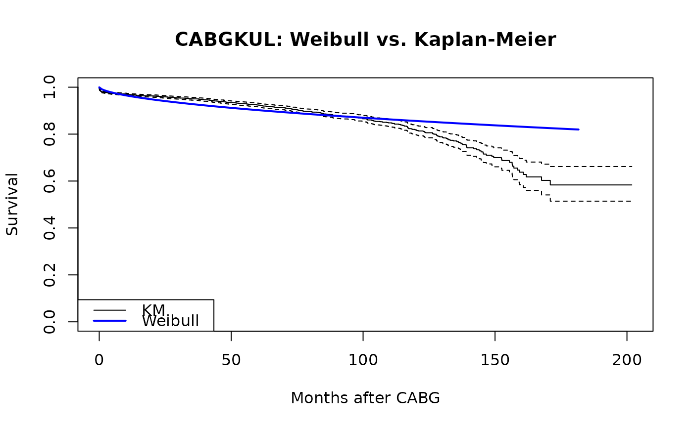

Survival data for 5,880 patients who underwent primary isolated CABG at KU Leuven, Belgium, between 1971 and July 1987. The simplest dataset structure (intercept-only, right-censored) with large sample size exercising all three temporal hazard phases.
Format
A data frame with 5880 rows and 2 variables:
- int_dead
Follow-up interval to death or last contact (months)
- dead
Death indicator (1 = dead, 0 = censored)
See also
Examples
data(cabgkul)
# Kaplan-Meier survival
km <- survival::survfit(survival::Surv(int_dead, dead) ~ 1, data = cabgkul)
plot(km, xlab = "Months after CABG", ylab = "Survival",
main = "CABGKUL: Kaplan-Meier survival (n = 5,880)")

# \donttest{
# Single-phase Weibull fit with parametric overlay
fit <- hazard(survival::Surv(int_dead, dead) ~ 1, data = cabgkul,
dist = "weibull", theta = c(mu = 0.10, nu = 1.0), fit = TRUE)
t_grid <- seq(0.01, max(cabgkul$int_dead) * 0.9, length.out = 200)
surv <- predict(fit, newdata = data.frame(time = t_grid),
type = "survival")
plot(km, xlab = "Months after CABG", ylab = "Survival",
main = "CABGKUL: Weibull vs. Kaplan-Meier")
lines(t_grid, surv, col = "blue", lwd = 2)
legend("bottomleft", c("KM", "Weibull"), col = c("black", "blue"),
lty = 1, lwd = c(1, 2))

# }